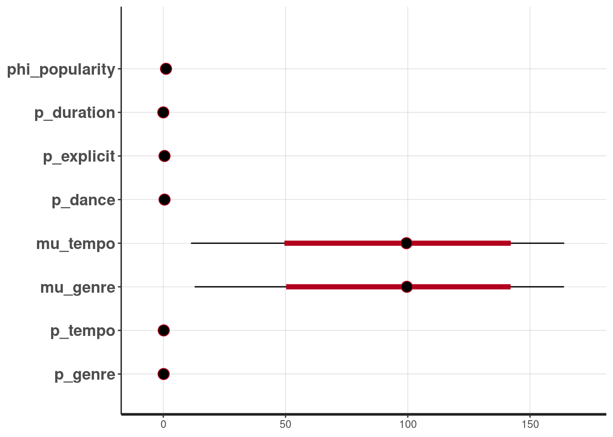
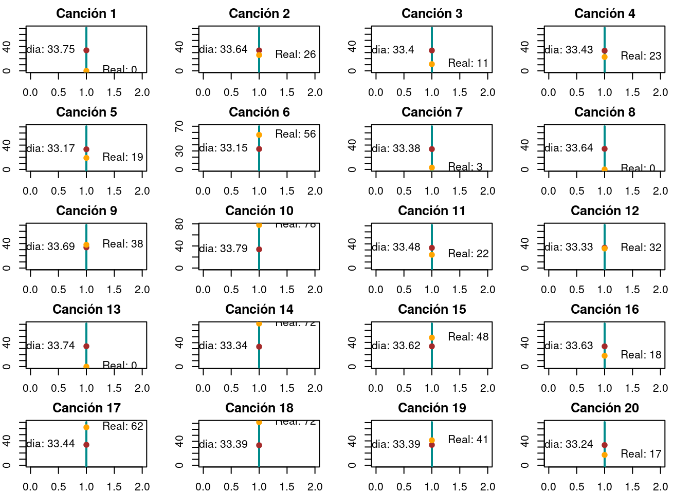

#install.packages("spotifyr")
#install.packages("bayesrules")
library(rstan)
library(ggplot2)
library(gridExtra)Análisis de popularidad de canciones en el servicio de streamig Spotify
Librerias
Análisis de popularidad de canciones en spotify
Planteamiento
De acuerdo con wikipedia, en la plataforma de Spotify se tiene acceso a más de 100 millones de canciones. Algunas canciones son más populares que otras. Si definimos a la variable ùëå como un rating de popularidad con ùëå ‚àà [0, 100]. En general, entre más reproducciones recientes tenga una una canci√≥n, su rating de popularidad será mayor.
Sabemos que la popularidad de una canción, no siempre es reflejo de su calidad, popularidad a largo plazo, o popularidad afuera de la audiencia de Spotify. Además del artista hay otras características que hacen popular a una canción, como la “valencia”, que define que tan alegre suena una pieza.
Para el proyecto nos enfocaremos en entender:
- Cual es la popularidad típica de una canción en Spotify?
- Hasta donde influye el artista en la popularidad de la canción?
- Para un sólo artista, cómo varía la popularidad de sus canciones?
- Como influye la valencia en la popularidad de una canción?
Métodos:
- Para nuestro proyecto planeamos hacer tres tipos de modelos:
- Modelo con parámetros homogéneos: Modelar la popularidad de las canciones sin tomar en cuenta el artista.
- Modelo con parámetros heterogéneos: Modelar la popularidad de las canciones tomando en cuenta a los artistas que las interpretan.
- Modelo Jerárquico Una alternativa intermedia donde permitimos que la distribución inicial sobre la popularidad pueda adaptarse a los datos. Y comparar sus distribuciones predictivas con los datos observados, para ver cuál modela mejor y porqué.
- Modelo Jerarquico con DAG: Haremos un DAG para agregar al modelo jerárquico la variable de valencia.
Tamaño y estructura de los datos
Observamos la estructura de los datos
datos <- read.csv("datos/datos.csv")
print(head(datos)) id track_id artists
1 0 5SuOikwiRyPMVoIQDJUgSV Gen Hoshino
2 1 4qPNDBW1i3p13qLCt0Ki3A Ben Woodward
3 2 1iJBSr7s7jYXzM8EGcbK5b Ingrid Michaelson;ZAYN
4 3 6lfxq3CG4xtTiEg7opyCyx Kina Grannis
5 4 5vjLSffimiIP26QG5WcN2K Chord Overstreet
6 5 01MVOl9KtVTNfFiBU9I7dc Tyrone Wells
album_name
1 Comedy
2 Ghost (Acoustic)
3 To Begin Again
4 Crazy Rich Asians (Original Motion Picture Soundtrack)
5 Hold On
6 Days I Will Remember
track_name popularity duration_ms explicit danceability
1 Comedy 73 230666 False 0.676
2 Ghost - Acoustic 55 149610 False 0.420
3 To Begin Again 57 210826 False 0.438
4 Can't Help Falling In Love 71 201933 False 0.266
5 Hold On 82 198853 False 0.618
6 Days I Will Remember 58 214240 False 0.688
energy key loudness mode speechiness acousticness instrumentalness liveness
1 0.4610 1 -6.746 0 0.1430 0.0322 1.01e-06 0.3580
2 0.1660 1 -17.235 1 0.0763 0.9240 5.56e-06 0.1010
3 0.3590 0 -9.734 1 0.0557 0.2100 0.00e+00 0.1170
4 0.0596 0 -18.515 1 0.0363 0.9050 7.07e-05 0.1320
5 0.4430 2 -9.681 1 0.0526 0.4690 0.00e+00 0.0829
6 0.4810 6 -8.807 1 0.1050 0.2890 0.00e+00 0.1890
valence tempo time_signature track_genre
1 0.715 87.917 4 acoustic
2 0.267 77.489 4 acoustic
3 0.120 76.332 4 acoustic
4 0.143 181.740 3 acoustic
5 0.167 119.949 4 acoustic
6 0.666 98.017 4 acousticContamos con 114000 registros de canciones y 21 características que los representan
str(datos)'data.frame': 114000 obs. of 21 variables:
$ id : int 0 1 2 3 4 5 6 7 8 9 ...
$ track_id : chr "5SuOikwiRyPMVoIQDJUgSV" "4qPNDBW1i3p13qLCt0Ki3A" "1iJBSr7s7jYXzM8EGcbK5b" "6lfxq3CG4xtTiEg7opyCyx" ...
$ artists : chr "Gen Hoshino" "Ben Woodward" "Ingrid Michaelson;ZAYN" "Kina Grannis" ...
$ album_name : chr "Comedy" "Ghost (Acoustic)" "To Begin Again" "Crazy Rich Asians (Original Motion Picture Soundtrack)" ...
$ track_name : chr "Comedy" "Ghost - Acoustic" "To Begin Again" "Can't Help Falling In Love" ...
$ popularity : int 73 55 57 71 82 58 74 80 74 56 ...
$ duration_ms : int 230666 149610 210826 201933 198853 214240 229400 242946 189613 205594 ...
$ explicit : chr "False" "False" "False" "False" ...
$ danceability : num 0.676 0.42 0.438 0.266 0.618 0.688 0.407 0.703 0.625 0.442 ...
$ energy : num 0.461 0.166 0.359 0.0596 0.443 0.481 0.147 0.444 0.414 0.632 ...
$ key : int 1 1 0 0 2 6 2 11 0 1 ...
$ loudness : num -6.75 -17.23 -9.73 -18.52 -9.68 ...
$ mode : int 0 1 1 1 1 1 1 1 1 1 ...
$ speechiness : num 0.143 0.0763 0.0557 0.0363 0.0526 0.105 0.0355 0.0417 0.0369 0.0295 ...
$ acousticness : num 0.0322 0.924 0.21 0.905 0.469 0.289 0.857 0.559 0.294 0.426 ...
$ instrumentalness: num 1.01e-06 5.56e-06 0.00 7.07e-05 0.00 0.00 2.89e-06 0.00 0.00 4.19e-03 ...
$ liveness : num 0.358 0.101 0.117 0.132 0.0829 0.189 0.0913 0.0973 0.151 0.0735 ...
$ valence : num 0.715 0.267 0.12 0.143 0.167 0.666 0.0765 0.712 0.669 0.196 ...
$ tempo : num 87.9 77.5 76.3 181.7 119.9 ...
$ time_signature : int 4 4 4 3 4 4 3 4 4 4 ...
$ track_genre : chr "acoustic" "acoustic" "acoustic" "acoustic" ...Obtenemos un resumen de los datos y sus variables
print(summary(datos)) id track_id artists album_name
Min. : 0 Length:114000 Length:114000 Length:114000
1st Qu.: 28500 Class :character Class :character Class :character
Median : 57000 Mode :character Mode :character Mode :character
Mean : 57000
3rd Qu.: 85499
Max. :113999
track_name popularity duration_ms explicit
Length:114000 Min. : 0.00 Min. : 0 Length:114000
Class :character 1st Qu.: 17.00 1st Qu.: 174066 Class :character
Mode :character Median : 35.00 Median : 212906 Mode :character
Mean : 33.24 Mean : 228029
3rd Qu.: 50.00 3rd Qu.: 261506
Max. :100.00 Max. :5237295
danceability energy key loudness
Min. :0.0000 Min. :0.0000 Min. : 0.000 Min. :-49.531
1st Qu.:0.4560 1st Qu.:0.4720 1st Qu.: 2.000 1st Qu.:-10.013
Median :0.5800 Median :0.6850 Median : 5.000 Median : -7.004
Mean :0.5668 Mean :0.6414 Mean : 5.309 Mean : -8.259
3rd Qu.:0.6950 3rd Qu.:0.8540 3rd Qu.: 8.000 3rd Qu.: -5.003
Max. :0.9850 Max. :1.0000 Max. :11.000 Max. : 4.532
mode speechiness acousticness instrumentalness
Min. :0.0000 Min. :0.00000 Min. :0.0000 Min. :0.00e+00
1st Qu.:0.0000 1st Qu.:0.03590 1st Qu.:0.0169 1st Qu.:0.00e+00
Median :1.0000 Median :0.04890 Median :0.1690 Median :4.16e-05
Mean :0.6376 Mean :0.08465 Mean :0.3149 Mean :1.56e-01
3rd Qu.:1.0000 3rd Qu.:0.08450 3rd Qu.:0.5980 3rd Qu.:4.90e-02
Max. :1.0000 Max. :0.96500 Max. :0.9960 Max. :1.00e+00
liveness valence tempo time_signature
Min. :0.0000 Min. :0.0000 Min. : 0.00 Min. :0.000
1st Qu.:0.0980 1st Qu.:0.2600 1st Qu.: 99.22 1st Qu.:4.000
Median :0.1320 Median :0.4640 Median :122.02 Median :4.000
Mean :0.2136 Mean :0.4741 Mean :122.15 Mean :3.904
3rd Qu.:0.2730 3rd Qu.:0.6830 3rd Qu.:140.07 3rd Qu.:4.000
Max. :1.0000 Max. :0.9950 Max. :243.37 Max. :5.000
track_genre
Length:114000
Class :character
Mode :character
Limpieza y adecuación de datos
Asignacion de valores numéricos a los géneros
datos$genre_factor <- factor(datos$track_genre)
generos_unicos <- levels(datos$genre_factor)
#Diccionario
diccionario_generos <- setNames(seq_along(generos_unicos), generos_unicos)
datos$genre_numeric <- diccionario_generos[datos$genre_factor]Asignación de valores numéricos al artista
datos$artists_factor <- factor(datos$artists)
artistas_unicos <- levels(datos$artists_factor)
#Diccionario
diccionario_artists <- setNames(seq_along(artistas_unicos), artistas_unicos)
datos$artists_numeric <- diccionario_artists[datos$artists_factor]Codificación numérica para explicita
datos <- transform(datos,
explicit = ifelse(explicit, 1, 0))Agregar media de popularidad por artista
- Obtenemos popularidad del artista mediante la media de sus popularidades
media_popularidad_por_artista <- aggregate(popularity ~ artists_numeric, data = datos, FUN = mean)
names(media_popularidad_por_artista)[2] <- "popularity_artist"
datos <- merge(datos, media_popularidad_por_artista, by = "artists_numeric", all.x = TRUE)Muestra de los datos
n <- 1000
# muestra aleatoria (Sólo para EDA)
datos <- datos[sample(nrow(datos), n), ]Exploración de los datos
# popularidad
ggplot(datos, aes(x = factor(popularity))) +
geom_bar(fill = "darkcyan", color = "black") +
labs(x = "Popularidad", y = "Frecuencia", title = "Distribución de la popularidad") +
theme(axis.text.x = element_text(angle = 90, vjust = 0.5, hjust=1))
# Crear los gráficos individuales
plot_valence <-ggplot(datos, aes(x = valence, y = popularity)) +
geom_point(color="pink") +
geom_smooth(method = "loess", se = FALSE, color="black")
labs(x = "Valence", y = "Popularity")
plot_acousticness <- ggplot(datos, aes(x = acousticness, y = popularity)) +
geom_point(color="lightblue") +
geom_smooth(method = "loess", se = FALSE, color="black")
labs(x = "Acousticness", y = "Popularity")
plot_danceability <- ggplot(datos, aes(x = danceability, y = popularity)) +
geom_point(color="gray") +
geom_smooth(method = "loess", se = FALSE, color="black")
labs(x = "Danceability", y = "Popularity")
plot_duration <- ggplot(datos, aes(x = duration_ms, y = popularity)) +
geom_point(color="lightgreen") +
geom_smooth(method = "loess", se = FALSE, color="black")
labs(x = "Duration (ms)", y = "Popularity")
plot_energy <- ggplot(datos, aes(x = energy, y = popularity)) +
geom_point(color="#e55b76") +
geom_smooth(method = "loess", se = FALSE, color="black")
labs(x = "Energy", y = "Popularity")
plot_explicit <- ggplot(datos, aes(x = explicit, y = ..count..)) +
geom_bar(fill="#2d8076") +
labs(x = "Explicit", y = "Count Explicit")
plot_instrumentalness <- ggplot(datos, aes(x = instrumentalness, y = popularity)) +
geom_point(color="#e8dc61") +
geom_smooth(method = "loess", se = FALSE, color="black")
labs(x = "Instrumentalness", y = "Popularity")
plot_liveness <- ggplot(datos, aes(x = liveness, y = popularity)) +
geom_point(color="#4a802d") +
geom_smooth(method = "loess", se = FALSE, color="black")
labs(x = "Liveness", y = "Popularity")
plot_loudness <- ggplot(datos, aes(x = loudness, y = popularity)) +
geom_point(color="violet") +
geom_smooth(method = "loess", se = FALSE, color="black")
labs(x = "Loudness", y = "Popularity")
plot_mode <- ggplot(datos, aes(x = mode, y = ..count..)) +
geom_bar(fill="#945abb") +
labs(x = "Mode", y = "Count")
plot_speechiness <- ggplot(datos, aes(x = speechiness, y = popularity)) +
geom_point(color="brown") +
geom_smooth(method = "loess", se = FALSE, color="black")
labs(x = "Speechiness", y = "Popularity")
plot_tempo <- ggplot(datos, aes(x = tempo, y = popularity)) +
geom_point(color="orange") +
geom_smooth(method = "loess", se = FALSE, color="black")
labs(x = "Tempo", y = "Popularity")# Colocar los gráficos en un grid
grid.arrange(
plot_valence, plot_acousticness, plot_danceability, plot_duration, plot_energy,
plot_explicit, plot_instrumentalness, plot_liveness, plot_loudness, plot_mode,
plot_speechiness, plot_tempo,
nrow = 4, ncol = 3
)`geom_smooth()` using formula = 'y ~ x'
`geom_smooth()` using formula = 'y ~ x'
`geom_smooth()` using formula = 'y ~ x'
`geom_smooth()` using formula = 'y ~ x'
`geom_smooth()` using formula = 'y ~ x'Warning: The dot-dot notation (`..count..`) was deprecated in ggplot2 3.4.0.
ℹ Please use `after_stat(count)` instead.`geom_smooth()` using formula = 'y ~ x'
`geom_smooth()` using formula = 'y ~ x'
`geom_smooth()` using formula = 'y ~ x'
`geom_smooth()` using formula = 'y ~ x'
`geom_smooth()` using formula = 'y ~ x'
Selección de columnas
full_data <- datos
selected_datos <- datos[, c("popularity", "duration_ms","explicit","danceability","tempo","genre_numeric","popularity_artist")]
selected_datos$explicit <- as.integer(selected_datos$explicit)
selected_datos <- head(selected_datos,5000)
selected_datos_small <- head(selected_datos,50)Modelo lineal
Generamos un modelo lineal con priors poco informativas.
El modelo lineal simple lo expresamos como:
\(y_i=\beta_0 + \beta_1 * x_i + \sigma_i​\)
Donde:
\(y_i\)​ es la popularidad de la observación i. \(x_i\)​ es la variable predictora (por ejemplo, duración de la canción) para la observación i. \(\beta_0\)​ y \(\beta_1\)​ son los coeficientes del modelo. \(\sigma_i\)​ es el error aleatorio asociado con la observación i, que asumiremos normalmente distribuido con media cero y varianza constante.
stan_code_lineal <- "
data {
int<lower=0> N;
int<lower=0, upper=100> popularity[N];
real<lower=0> duration[N];
int<lower=0, upper=1> explicito[N];
real<lower=0, upper=1> dance[N];
real<lower=0, upper=244> tempo[N];
int<lower=1, upper=114> genre[N];
}
parameters {
real mu_popularity;
real<lower=0> sigma_popularity;
real beta_duration;
real beta_explicito;
real beta_dance;
real beta_tempo;
real beta_genre;
}
model {
// Priors
mu_popularity ~ normal(0,1);
sigma_popularity ~ normal(0,1);
beta_duration ~ normal(0,1);
beta_explicito ~ normal(0,1);
beta_dance ~ normal(0,1);
beta_tempo ~ normal(0,1);
beta_genre ~ normal(0,1);
// Likelihood
for (i in 1:N) {
popularity[i] ~ normal(mu_popularity +
beta_duration * duration[i] +
beta_explicito * explicito[i] +
beta_dance * dance[i] +
beta_tempo * tempo[i] +
beta_genre * genre[i]
, sigma_popularity);
}
}
"
# Compilar el modelo
stan_model_lineal <- stan_model(model_code = stan_code_lineal)# Ajustar el modelo a los datos
fit_lineal <- sampling(stan_model_lineal,
data = list(N = nrow(selected_datos_small),
popularity = selected_datos_small$popularity,
duration = selected_datos_small$duration_ms,
explicito = selected_datos_small$explicit,
dance = selected_datos_small$danceability,
tempo = selected_datos_small$tempo,
genre = selected_datos_small$genre_numeric),
iter=10000, warmup=3000)Warning: There were 8391 transitions after warmup that exceeded the maximum treedepth. Increase max_treedepth above 10. See
https://mc-stan.org/misc/warnings.html#maximum-treedepth-exceededWarning: Examine the pairs() plot to diagnose sampling problems# Ver resultados
print(fit_lineal)Inference for Stan model: anon_model.
4 chains, each with iter=10000; warmup=3000; thin=1;
post-warmup draws per chain=7000, total post-warmup draws=28000.
mean se_mean sd 2.5% 25% 50% 75% 97.5%
mu_popularity 0.20 0.01 0.99 -1.70 -0.46 0.20 0.87 2.15
sigma_popularity 11.77 0.00 0.46 10.88 11.45 11.76 12.07 12.69
beta_duration 0.00 0.00 0.00 0.00 0.00 0.00 0.00 0.00
beta_explicito 0.61 0.01 0.98 -1.30 -0.06 0.60 1.26 2.54
beta_dance 0.14 0.01 0.98 -1.79 -0.52 0.14 0.80 2.08
beta_tempo 0.16 0.00 0.04 0.09 0.14 0.16 0.19 0.24
beta_genre 0.07 0.00 0.05 -0.03 0.03 0.07 0.10 0.17
lp__ -285.69 0.02 1.88 -290.32 -286.72 -285.37 -284.32 -283.05
n_eff Rhat
mu_popularity 16790 1
sigma_popularity 22139 1
beta_duration 29603 1
beta_explicito 22740 1
beta_dance 20672 1
beta_tempo 19117 1
beta_genre 18789 1
lp__ 13210 1
Samples were drawn using NUTS(diag_e) at Fri May 3 20:25:27 2024.
For each parameter, n_eff is a crude measure of effective sample size,
and Rhat is the potential scale reduction factor on split chains (at
convergence, Rhat=1).Observamos intervalos de credibilidad
extract_lineal <- extract(fit_lineal)
stan_plot(fit_lineal, prob = 0.95)ci_level: 0.8 (80% intervals)outer_level: 0.95 (95% intervals)
Podemos ver tambien, al observar los coeficientes, que el género y el grado de “daceability” tienen una mayor influencia sobre la popularidad de una canción.
Modelo lineal con prioris informativas
Modelamos la opularidad en base a las siguientes características:
- Duración: duration_ms
- ¿Es explicita?: explicit
- ¿Que tan bailable?: danceability
- Tempo: tempo
- Genero: track_genre
Proponemos como distribuciones iniciales las siguientes:
Popularidad:
Es nuestra variable objetivo y debido a que la popularidad es un valor discreto entre 0 y 100, elegimos una distribución Binomial Negativa la cual permitirá modelar la sobredispersión, pues esperamos que la popularidad tenga una amplia variabilidad.
En este caso, consideramos la popularidad como el resultado de un proceso de “éxito”, es decir, la canción es escuchada o marcada como favorita por un usuario hasta que se alcanza un número fijo de “éxitos” ( cierto nivel de popularidad).
- popularidad ~ N(\(\mu\),\(\phi\))
Duración:
Sabemos que la duración de las canciones debe ser mayor a cero y tiene una media aproximada de 3 minutos, por lo que usaremos una distribución exponencial.
- duración ~ Exp(\(\lambda\)) ; \(\lambda\) = 1/180000 (se encuentra en milisegundos)
Explicita:
La bariable “explicita” es una variable que tomará los valores 0 y 1. Usaremos entonces una distribución Beta para modelarla.
- explicita ~ Beta(\(\rho\))
Bailable:
Ya que los valores que toma esta variable se encuentran entre 0 y 1, utilizaremos uns distribución Beta.
- bailable ~ Beta(\(\alpha\),\(\beta\))
Tempo:
Variable continua entre 0 y 244. Utilizaremos una distribución normal truncada
- tempo ~ N+(\(\mu\),\(\sigma\))
Genero:
El genero es una variable entera, por lo que la modelaremos usando una distribución Multinomial.
- genero ~ Multinomial(n,p)
Utilizaremos un modelo lineal generalizado (GLM) donde la popularidad sea una función lineal de las demás variables, teniendo en cuenta la naturaleza discreta de la popularidad (valores enteros entre 0 y 100).
stan_code <- "
data {
int<lower=0> N;
int<lower=0, upper=100> popularity[N];
real<lower=0> duration_ms[N];
int<lower=0, upper=1> explicito[N];
real<lower=0, upper=1> danceability[N];
real<lower=0, upper=244> tempo[N];
real<lower=1, upper=114> genre[N];
}
parameters {
real phi_popularity;
real<lower=0> p_duration;
real<lower=0, upper=1> p_explicit;
real<lower=0, upper=1> p_dance;
real<lower=0> mu_tempo;
real<lower=0> sigma_tempo;
real<lower=0> mu_genre;
real<lower=0> sigma_genre;
real<lower=0> p_tempo;
real<lower=0> p_genre;
}
model {
// Priors
phi_popularity ~ normal(0, 1);
p_duration ~ exponential(180000);
p_explicit ~ beta(2,2);
p_dance ~ beta(1, 1);
mu_tempo ~ normal(120, 30);
sigma_tempo ~ cauchy(0, 5);
mu_genre ~ normal(120, 30);
sigma_genre ~ cauchy(0, 5);
p_tempo ~ normal(mu_tempo, sigma_tempo);
p_genre ~ normal(mu_genre, sigma_genre);
// Likelihood
for (i in 1:N) {
real mu_popularity;
mu_popularity = p_duration * duration_ms[i] +
p_explicit * explicito[i] +
p_dance * danceability[i] +
p_tempo * tempo[i] +
p_genre * genre[i];
popularity[i] ~ neg_binomial_2(mu_popularity, phi_popularity); // Distribución binomial negativa para popularidad
}
}
"
# Compilar el modelo
stan_model <- stan_model(model_code = stan_code)stan_data <- list(
N = nrow(selected_datos_small),
popularity = selected_datos_small$popularity,
duration_ms = selected_datos_small$duration_ms,
explicito = selected_datos_small$explicit,
danceability = selected_datos_small$danceability,
tempo = selected_datos_small$tempo,
genre = selected_datos_small$genre_numeric
)
# Ajustar el modelo a los datos
fit <- sampling(stan_model, data = stan_data, chains = 4, iter = 50000, warmup = 5000)Warning: There were 44 divergent transitions after warmup. See
https://mc-stan.org/misc/warnings.html#divergent-transitions-after-warmup
to find out why this is a problem and how to eliminate them.Warning: Examine the pairs() plot to diagnose sampling problems# resultados
print(fit)Inference for Stan model: anon_model.
4 chains, each with iter=50000; warmup=5000; thin=1;
post-warmup draws per chain=45000, total post-warmup draws=180000.
mean se_mean sd 2.5% 25% 50% 75% 97.5%
phi_popularity 0.69 0.00 0.15 0.43 0.58 0.67 0.78 1.01
p_duration 0.00 0.00 0.00 0.00 0.00 0.00 0.00 0.00
p_explicit 0.50 0.00 0.22 0.09 0.33 0.50 0.68 0.90
p_dance 0.50 0.00 0.29 0.03 0.25 0.50 0.75 0.98
mu_tempo 97.21 0.15 36.70 10.30 75.12 99.42 122.17 163.61
sigma_tempo 121.70 0.68 223.34 10.13 51.94 81.57 132.61 459.38
mu_genre 97.26 0.17 36.81 10.30 74.97 99.47 122.33 164.24
sigma_genre 122.91 0.74 237.37 10.26 52.01 81.66 133.56 467.74
p_tempo 0.18 0.00 0.06 0.08 0.14 0.18 0.21 0.30
p_genre 0.17 0.00 0.13 0.01 0.07 0.14 0.24 0.48
lp__ -250.51 0.01 2.79 -257.12 -252.10 -250.07 -248.47 -246.36
n_eff Rhat
phi_popularity 132033 1
p_duration 187581 1
p_explicit 174812 1
p_dance 187720 1
mu_tempo 56876 1
sigma_tempo 108644 1
mu_genre 47666 1
sigma_genre 101879 1
p_tempo 110457 1
p_genre 117800 1
lp__ 34934 1
Samples were drawn using NUTS(diag_e) at Fri May 3 20:27:32 2024.
For each parameter, n_eff is a crude measure of effective sample size,
and Rhat is the potential scale reduction factor on split chains (at
convergence, Rhat=1).Observamos intervalos de credibilidad
stan_plot(fit, prob = 0.95)ci_level: 0.8 (80% intervals)outer_level: 0.95 (95% intervals)
Notamos que entre los coeficientes más altos se encuentran: genero, “danceability” y “explicit”.
Modelo de popularidad individual
El siguente modelo considerará solo la popularidad del artista como predictor de la popularidad de la canción.
individual_code <-"
data {
int<lower=0> N;
vector[N] popularity_artist;
vector[N] popularity;
}
parameters {
real intercept;
real beta_artist;
real<lower=0> sigma;
}
model {
// Priors
intercept ~ normal(0, 1);
beta_artist ~ normal(0, 1);
sigma ~ normal(0, 1);
// Likelihood
for (i in 1:N) {
// Modelo lineal
popularity[i] ~ normal(intercept + beta_artist * popularity_artist[i], sigma);
}
}
"
# Compilar el modelo
individual_model <- stan_model(model_code = individual_code)stan_indiv_data <- list(
N = nrow(selected_datos),
popularity = selected_datos$popularity,
popularity_artist = selected_datos$popularity_artist
)
# Ajustar el modelo a los datos
individual_fit <- sampling(individual_model, data = stan_indiv_data, chains = 4, iter = 10000, warmup = 500)print(individual_fit)Inference for Stan model: anon_model.
4 chains, each with iter=10000; warmup=500; thin=1;
post-warmup draws per chain=9500, total post-warmup draws=38000.
mean se_mean sd 2.5% 25% 50% 75% 97.5%
intercept 0.01 0.00 0.54 -1.05 -0.36 0.01 0.37 1.06
beta_artist 0.99 0.00 0.02 0.96 0.98 0.99 1.00 1.02
sigma 10.64 0.00 0.21 10.23 10.50 10.64 10.79 11.08
lp__ -2975.94 0.01 1.21 -2979.08 -2976.50 -2975.63 -2975.06 -2974.56
n_eff Rhat
intercept 16838 1
beta_artist 17227 1
sigma 21116 1
lp__ 14597 1
Samples were drawn using NUTS(diag_e) at Fri May 3 20:29:17 2024.
For each parameter, n_eff is a crude measure of effective sample size,
and Rhat is the potential scale reduction factor on split chains (at
convergence, Rhat=1).stan_plot(individual_fit, prob = 0.95)ci_level: 0.8 (80% intervals)outer_level: 0.95 (95% intervals)
Para observar el desempeño obtendremos las estimaciones de popularidad para 20 canciones y compararemos estas con la popularidad real.
En el siguiente gráfico puede observarse un intervalod el 95% de credibilidad para las 10 canciones así como la media de las simulaciones y el valor real de la popularidad para la canción.
avg_popularity_artists <- mean(selected_datos$popularity_artist)
n_songs = 20
# Calculamos las predicciones con los coeficientes obtenidos
comp_simul <- list()
for (i in 1:n_songs) {
mu_pred <- mean(extract(individual_fit)$intercept) +
mean(extract(individual_fit)$beta_artist) * avg_popularity_artists
pred_simuladas <- rnorm(10000, mean = mu_pred, sd = mean(extract(individual_fit)$sigma))
comp_simul[[i]] <- list(real_popularity = datos$popularity[i], simulated_popularity = pred_simuladas)
}# Establecer márgenes más pequeños
par(mar = c(2, 2, 2, 2))
par(mfrow=c(5, 4))
for (i in 1:length(comp_simul)) {
real_popularity <- comp_simul[[i]]$real_popularity
simulated_popularity <- comp_simul[[i]]$simulated_popularity
# intervalo de confianza del 95%
ci <- quantile(simulated_popularity, c(0.025, 0.975))
plot(1, xlim=c(0, 2), ylim=c(0, max(c(real_popularity, ci))), type="n", xlab="", ylab="Popularidad")
lines(rep(1, 2), ci, col="darkcyan", lwd=2)
points(1, abs(mean(simulated_popularity)), col="brown", pch=19)
points(1, real_popularity, col="orange", pch=19)
text(1.05, real_popularity, paste("Real:", real_popularity), pos=4,offset=1) # Etiqueta valor real
text(1.05, mean(simulated_popularity), paste("Media:", round(abs(mean(simulated_popularity)), 2)), pos=4,offset=-6) # Etiqueta media
title(paste("Canción", i)) # Título
}
par(mfrow=c(1, 1))
par(mar = c(5, 4, 4, 2) + 0.1)Modelo popularidad entre artistas
general_stan_code <-"
data {
int<lower=0> N; // Número de observaciones
real popularity_avg_artist; // Popularidad promedio entre artistas
vector[N] popularity; // Popularidad de la canción
}
parameters {
real intercept; // Intercepto
real beta_artist; // Coeficiente de la popularidad entre artistas
real<lower=0> sigma; // Desviación estándar de los errores
}
model {
// Priors
intercept ~ normal(0, 1); // Prior para el intercepto
beta_artist ~ normal(0, 1); // Prior para el coeficiente de la popularidad entre artistas
sigma ~ normal(0, 1); // Prior para la desviación estándar
// Likelihood
for (i in 1:N) {
// Modelo lineal
popularity[i] ~ normal(intercept + beta_artist * popularity_avg_artist, sigma);
}
}
//generated quantities {
// vector[N] simulated_popularity; // Simulaciones de la popularidad de las canciones
// Generar simulaciones
// for (i in 1:N) {
// simulated_popularity[i] = normal_rng(intercept + beta_artist * popularity_avg_artist, sigma);
// }
//}
"
# Compilar el modelo
general_model <- stan_model(model_code = general_stan_code)avg_popularity_artists <- mean(selected_datos$popularity_artist)
stan_general_data <- list(
N = nrow(selected_datos),
popularity = selected_datos$popularity,
popularity_avg_artist = avg_popularity_artists
)
# Ajustar el modelo a los datos
general_fit <- sampling(general_model, data = stan_general_data, chains = 4, iter = 10000, warmup = 500)print(general_fit)Inference for Stan model: anon_model.
4 chains, each with iter=10000; warmup=500; thin=1;
post-warmup draws per chain=9500, total post-warmup draws=38000.
mean se_mean sd 2.5% 25% 50% 75% 97.5%
intercept 0.02 0.01 1.01 -1.93 -0.66 0.02 0.69 2.03
beta_artist 0.99 0.00 0.04 0.92 0.96 0.99 1.01 1.06
sigma 19.15 0.00 0.33 18.52 18.92 19.14 19.36 19.79
lp__ -3815.61 0.01 1.24 -3818.80 -3816.16 -3815.28 -3814.70 -3814.20
n_eff Rhat
intercept 14593 1
beta_artist 14523 1
sigma 22024 1
lp__ 14180 1
Samples were drawn using NUTS(diag_e) at Fri May 3 20:31:02 2024.
For each parameter, n_eff is a crude measure of effective sample size,
and Rhat is the potential scale reduction factor on split chains (at
convergence, Rhat=1).stan_plot(general_fit, prob = 0.95)ci_level: 0.8 (80% intervals)outer_level: 0.95 (95% intervals)
Para observar el desempeño obtendremos las estimaciones de popularidad para 20 canciones y compararemos estas con la popularidad real.
En el siguiente gráfico puede observarse un intervalod el 95% de credibilidad para las 10 canciones así como la media de las simulaciones y el valor real de la popularidad para la canción.
n_songs = 20
comp_simul <- list()
for (i in 1:n_songs) {
mu_pred <- mean(extract(general_fit)$intercept) +
mean(extract(general_fit)$beta_artist) * avg_popularity_artists
pred_simuladas <- rnorm(10000, mean = mu_pred, sd = mean(extract(general_fit)$sigma))
comp_simul[[i]] <- list(real_popularity = datos$popularity[i], simulated_popularity = pred_simuladas)
}par(mar = c(2, 2, 2, 2))
par(mfrow=c(5, 4))
for (i in 1:length(comp_simul)) {
real_popularity <- comp_simul[[i]]$real_popularity
simulated_popularity <- comp_simul[[i]]$simulated_popularity
# intervalo de confianza del 95%
ci <- quantile(simulated_popularity, c(0.025, 0.975))
plot(1, xlim=c(0, 2), ylim=c(0, max(c(real_popularity, ci))), type="n", xlab="", ylab="Popularidad")
lines(rep(1, 2), ci, col="darkcyan", lwd=2)
points(1, abs(mean(simulated_popularity)), col="brown", pch=19)
points(1, real_popularity, col="orange", pch=19)
text(1.05, real_popularity, paste("Real:", real_popularity), pos=4,offset=1) # Etiqueta valor real
text(1.05, mean(simulated_popularity), paste("Media:", round(abs(mean(simulated_popularity)), 2)), pos=4,offset=-6) # Etiqueta media
title(paste("Canción", i)) # Título
}
par(mfrow=c(1, 1))
par(mar = c(5, 4, 4, 2) + 0.1)Modelo jerárquico
jerarquico_code <- "
data {
int<lower=0> N; // Número de observaciones
vector[N] popularity_artist; // Popularidad individual del artista
real popularity_avg_artist; // Popularidad promedio entre artistas
vector[N] popularity; // Popularidad de la canción
}
parameters {
real intercept; // Intercepto
real beta_individual_artist; // Coeficiente de la popularidad individual del artista
real beta_avg_artist; // Coeficiente de la popularidad promedio entre artistas
real<lower=0> sigma; // Desviación estándar de los errores
}
model {
// Priors
intercept ~ normal(0, 1); // Prior para el intercepto
beta_individual_artist ~ normal(0, 1); // Prior para el coeficiente de la popularidad individual del artista
beta_avg_artist ~ normal(0, 1); // Prior para el coeficiente de la popularidad promedio entre artistas
sigma ~ normal(0, 1); // Prior para la desviación estándar
// Likelihood
for (i in 1:N) {
// Modelo lineal jerárquico
popularity[i] ~ normal(intercept + beta_individual_artist * popularity_artist[i] + beta_avg_artist * popularity_avg_artist, sigma);
}
}
"
# Compilar el modelo
jerarquico_model <- stan_model(model_code = jerarquico_code)Ejecutamos el modelo
stan_jerarquico_data <- list(
N = nrow(selected_datos),
popularity = selected_datos$popularity,
popularity_avg_artist = avg_popularity_artists,
popularity_artist = selected_datos$popularity_artist
)
# Ajustar el modelo a los datos
jerarquico_fit <- sampling(jerarquico_model, data = stan_jerarquico_data, chains = 4, iter = 10000, warmup = 500)
print(jerarquico_fit)Observamos el resumen del entrenamiento
stan_plot(jerarquico_fit, prob = 0.95)ci_level: 0.8 (80% intervals)outer_level: 0.95 (95% intervals)
Para observar el desempeño obtendremos las estimaciones de popularidad para 20 canciones y compararemos estas con la popularidad real.
En el siguiente gráfico puede observarse un intervalod el 95% de credibilidad para las 10 canciones así como la media de las simulaciones y el valor real de la popularidad para la canción.
n_songs = 20
# Calculamos las predicciones con los coeficientes obtenidos
comp_simul <- list()
for (i in 1:n_songs) {
mu_pred <- mean(extract(jerarquico_fit)$intercept) +
mean(extract(jerarquico_fit)$beta_individual_artist) * datos$popularity_artist[i] +
mean(extract(jerarquico_fit)$beta_avg_artist) * avg_popularity_artists
pred_simuladas <- rnorm(10000, mean = mu_pred, sd = mean(extract(jerarquico_fit)$sigma))
comp_simul[[i]] <- list(real_popularity = datos$popularity[i], simulated_popularity = pred_simuladas)
}par(mar = c(2, 2, 2, 2))
par(mfrow=c(5, 4))
for (i in 1:length(comp_simul)) {
real_popularity <- comp_simul[[i]]$real_popularity
simulated_popularity <- comp_simul[[i]]$simulated_popularity
# intervalo de confianza del 95%
ci <- quantile(simulated_popularity, c(0.025, 0.975))
plot(1, xlim=c(0, 2), ylim=c(0, max(c(real_popularity, ci))), type="n", xlab="", ylab="Popularidad")
lines(rep(1, 2), ci, col="darkcyan", lwd=2)
points(1, abs(mean(simulated_popularity)), col="brown", pch=19)
points(1, real_popularity, col="orange", pch=19)
text(1.05, real_popularity, paste("Real:", real_popularity), pos=4,offset=1) # Etiqueta valor real
text(1.05, mean(simulated_popularity), paste("Media:", round(abs(mean(simulated_popularity)), 2)), pos=4,offset=-6) # Etiqueta media
title(paste("Canción", i)) # Título
}
par(mfrow=c(1, 1))
par(mar = c(5, 4, 4, 2) + 0.1)